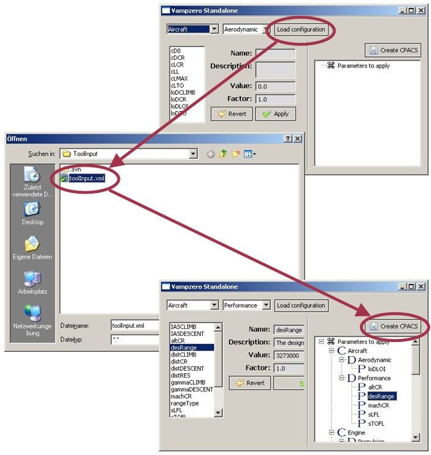

In this section you will get a quick start into VAMPzero. The following pages will lead you through the complete process for downloading, installing and running VAMPzero.
There are currently two versions of VAMPzero available. The first one is compliled and comes along with a small graphical user interface. It is probably the better one if you just want to have a quick look at it.
The second version comes as source code and can be run from any Python console. If you are interested in looking at the code, including your own equations and factors, this is probably the right place for you.
Follow this link to download VAMPzero
If you have downloaded the .zip file from the link above you only need to unzip it to a folder of your choice. We have tested the binary version of VAMPzero on Windows XP, 7 (both 32 and 64bit).
To run VAMPzero through the graphical user interface you just need to execute the VAMPzero.bat file in the folder you unzipped. If you have Java installed and the downloaded files are not coruppted, a commandline prompt as well as the graphical user interface will open.
The first thing to do is, loading a prepared input file via the Load configuration button on the upper right. Try to load the toolInput.xml file, that can be found in the ToolInput folder in the directory where you unzipped VAMPzero.
A number of components, disciplines and parameters will be loaded, so that the graphical user interface now displays some values. You can at a later point change these values but for now you can continue with pressing Create CPACS.
The graphical user interface will now create a new ./ToolInput/toolInput.xml file and trigger VAMPzero.
Currently, VAMPzero is provided as a scripted version. So you should be familiar at least to some extend to Python programming. VAMPzero runs on Python 2.6 so this should be installed on your computer along with the setuptools. I have not encountered any issues with Python 2.7 as well. The installer will load missing packages.
Now open a console and browse to the folder where you have unzipped VAMPzero. Type:
python setup.py install
VAMPzero will now register itself with your Python distribution. For a simple start you can try to run the delivered script:
python VAMPzero.py
In the commandline prompt you will see the calculation running. VAMPzero displays all values read, the calculation history for each iteration and will finally print a list of all calculated results. The last lines in the output window should read something like:
##############################################################################
VAMPzero
FINISHED
15.06 seconds passed
##############################################################################
##############################################################################
If you can read this message there is a good chance that your first calculation run was successful. For more information on the calculation run you can look into The Log File . You can now proceed to one of the following sections. There is information on handling the results generated by VAMPzero as well as some more information on how to manipulate the input data.
{kind=link}